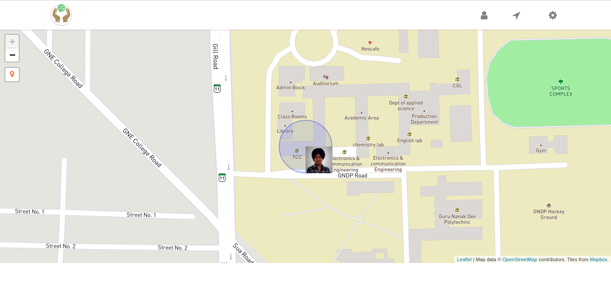
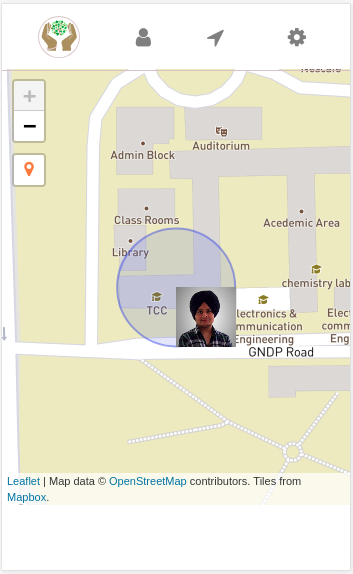

Jagjeet Singh - 1411266
Amritpal Singh - 1411234
Abhinav Handa - 1411227
Harnarinder Singh - 1411262
Before starting, I want to acknowledge Dr. Kiran Jyoti (Assistant Professor, at Guru Nanak Dev Engineering College)
parupkaar.org is an non-profit organization with the aim to provide volunteers to help anyone. We will provide a platform where altruist meets the needy. Our main motive is to help the masses without any inconsiderate motives.
Right now, there is no online platform which can show all the live volunteers in a area and people who provide the same service usually charge some money to the NGO’s.
We are going to provide a platform where people can openly contribute either as a volunteer or donator.
parupkaar.org will let volunteers create their profile and will connect them to others. By letting people see location of volunteers in a particular area, a connection will be established so that needy people can be helped.
Everyone who feels like helping others will use our product, volunteers who wish to act as a medium between donator and needy.
Others will be the donators themselves, who wish to help in any kind. Also other N.G.O’s can be contacted to widen the users.
Web view
Mobile view
| Space | Forward |
|---|---|
| Right, Down, Page Down | Next slide |
| Left, Up, Page Up | Previous slide |
| P | Open presenter console |
| H | Toggle this help |